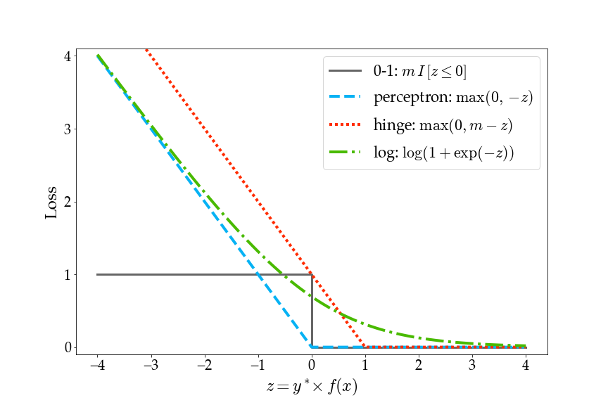
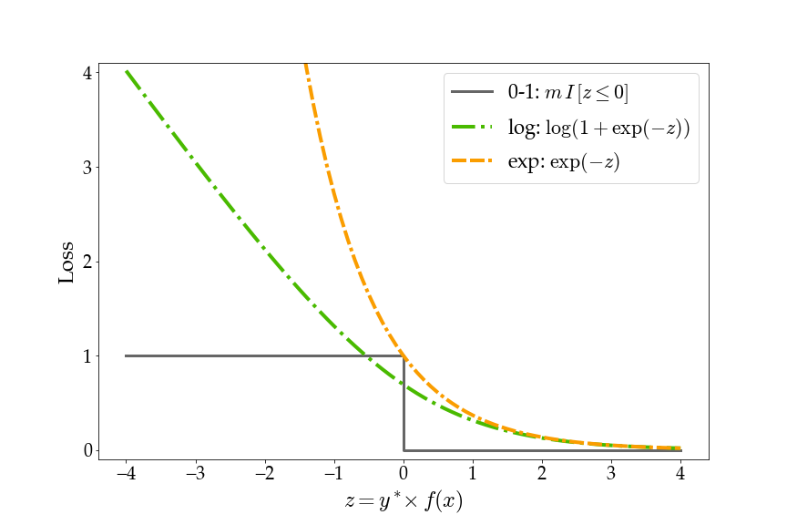
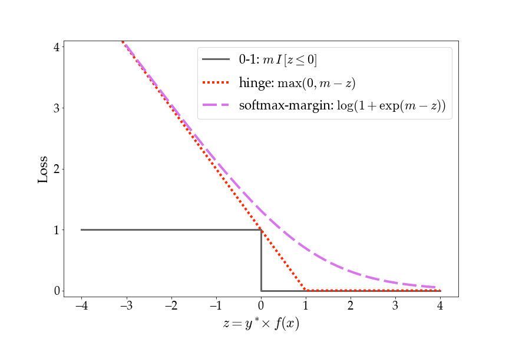
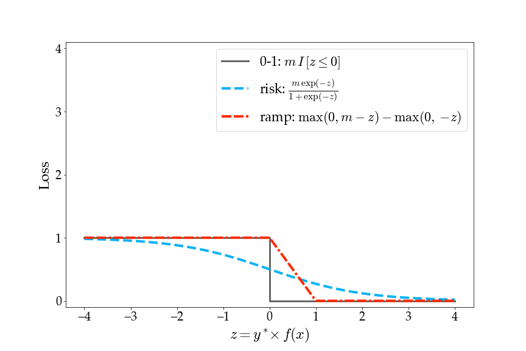

Visualizing Losses for Binary Classification
This page hosts a Jupyter Notebook for plotting loss functions for binary classification.
Downloads:
The horizontal axis, z, represents the ground truth output y* multiplied by the classifier score f(x) for an input x. Since this is binary classification, y* is either -1 or 1 and f(x) is a scalar.
Please contact me with issues, bug reports, etc.
 All materials on this page are released under CC0 1.0 Universal (public domain).
All materials on this page are released under CC0 1.0 Universal (public domain).
Back to my teaching materials.
This page hosts a Jupyter Notebook for plotting loss functions for binary classification.
Downloads:
- lossviz.ipynb: notebook for generating loss function plots
- loss-pdf.zip: pdf files of the example plots below
- loss-png.zip: png files of the example plots below
The horizontal axis, z, represents the ground truth output y* multiplied by the classifier score f(x) for an input x. Since this is binary classification, y* is either -1 or 1 and f(x) is a scalar.




Please contact me with issues, bug reports, etc.
All materials on this page are released under CC0 1.0 Universal (public domain).Back to my teaching materials.